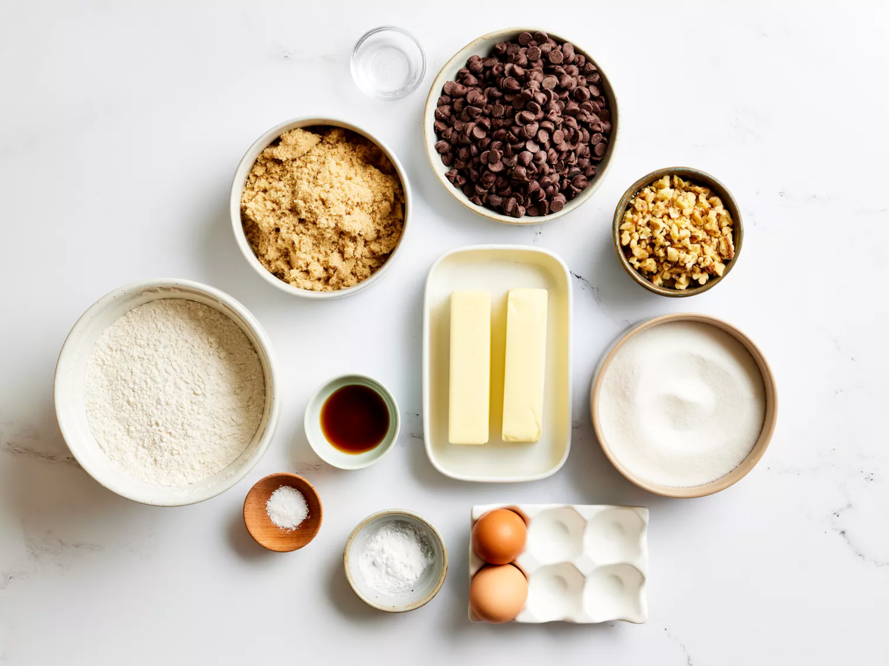
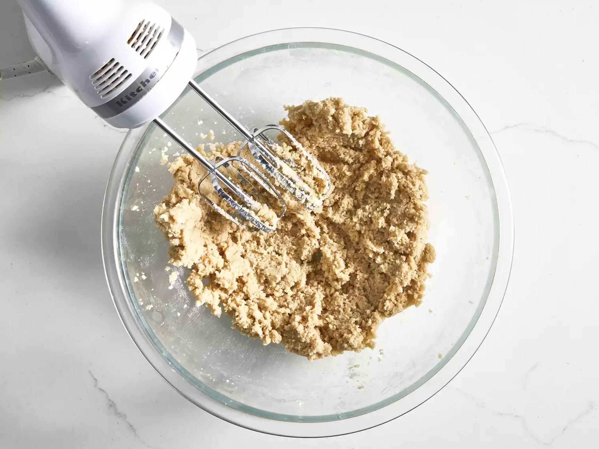

Chocolate Chip Cookies

The go-to recipe for the most delicious cookie you've ever had.
The go-to recipe for the most delicious cookie you've ever had.
Gather your ingredients, making sure your butter is softened, and your eggs are room temperature.
Preheat the oven to 350 degrees F (175 degrees C). Beat butter, white sugar, and brown sugar with an electric mixer in a large bowl until smooth.
Beat in eggs, one at a time, then stir in vanilla.
Dissolve baking soda in hot water. Add to batter along with salt.
Stir in flour, chocolate chips, and walnuts.
Drop spoonfuls of dough 2 inches apart onto ungreased baking sheets.
Bake in the preheated oven until edges are nicely browned, about 10 minutes.
Cool on the baking sheets briefly before removing to a wire rack to cool completely.
Store in an airtight container or serve immediately and enjoy!